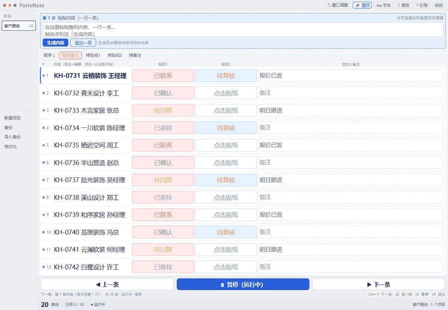
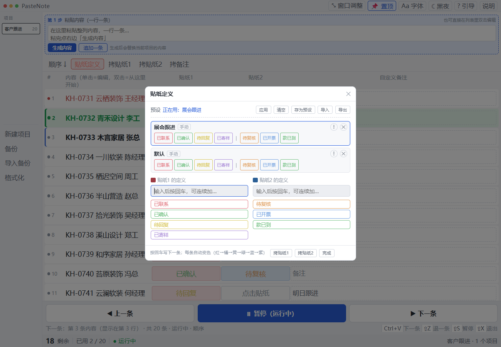
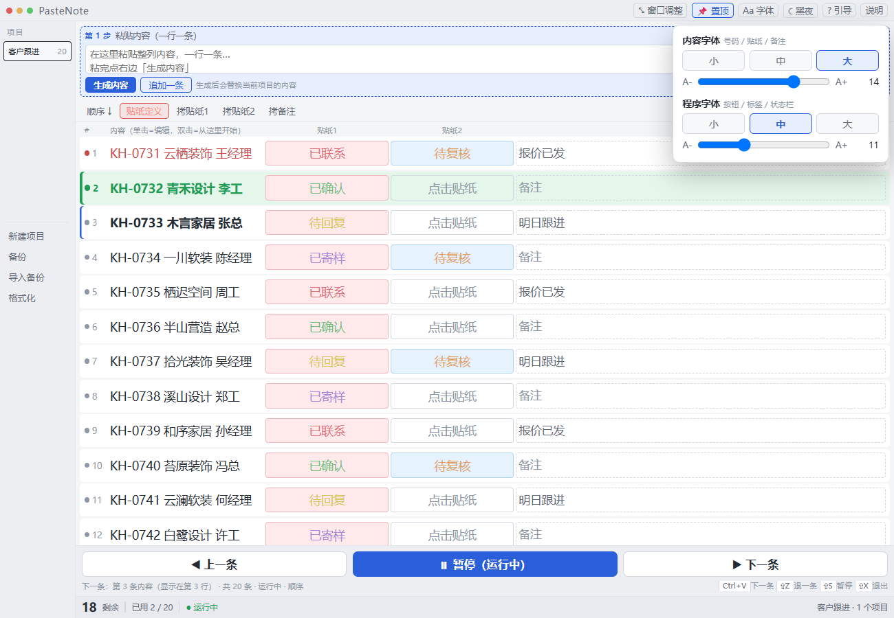
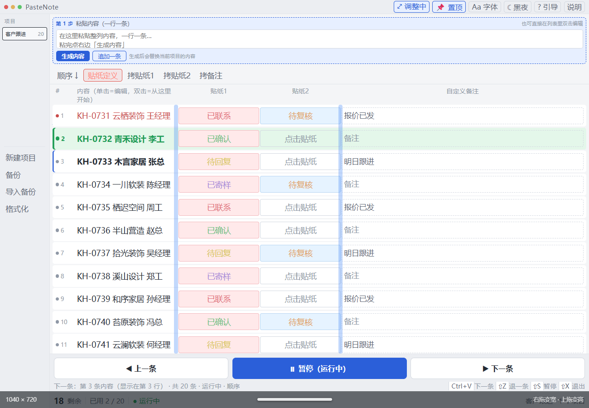
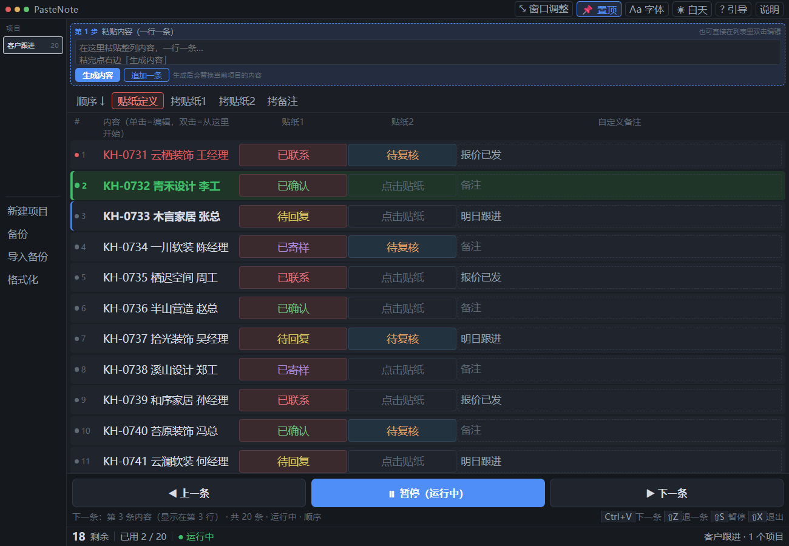

这个工具解决的不是「复制粘贴慢」，而是每天几十次的窗口切换。一列 20～50 条编号，要挨个到 IM / 表单里联系，联系完把结果记回来——真正贵的是来回找位置、怕漏记、以及收尾时把同一批数据再录一遍。

01问题：贵的是「窗口切换税」
原来的做法是：在 Excel 里复制一个编号 → 切到 IM 粘贴 → 谈完切回 Excel → 写一句备注 → 再复制下一个。拆开看是三笔成本：
- 切换成本：每处理一条来回切两次窗口，50 条就是 100 次碎片切换；
- 记忆成本：切回来常忘了刚才这条联系上没有，于是重复联系或漏记——这比慢更贵；
- 状态成本：状态只写在备注文字里，不是结构化数据，收尾还要手工整理回跟进表。
也试过「不用工具」的替代方案：把话术写进输入法快捷短语，装不下备注与状态；在 Excel 里处理再回填，状态仍要二次录入。所以真正要解决的是顺序、状态、回填三件事——「剪贴板工具」只是最后一公里的形态，不是问题本身。
02方案：一次装载，之后只剩一个动作
把一列内容一次性贴进「第 1 步」框，点「生成内容」，整列就变成一张带状态的清单；之后每按一次 Ctrl+V 就是下一条，顺手点一下贴纸、写一句备注；全部处理完，导出回跟进表。
关键机制：在你按键「之前」就把下一条装进剪贴板
整个工具最关键的一行设计，不是「按快捷键换内容」，而是预装：程序始终把「下一条」提前放进剪贴板，你按下的那一下，目标窗口粘到的就是界面上标着「下一条」的那条。
这样换来的是：轻按、按住不放、连着快按，都不会错位。反过来，如果等按下去才写剪贴板，就会和目标窗口的粘贴抢时间——三种手感里总有一种会粘出上一条。

状态轴是三态 + 倒序：未处理 / 已处理 / 刚刚粘贴。倒序视图以绿条为轴心，已处理的行钉在原位，未处理的行从下往上填空位——处理到一半切出去接个电话回来，不用重新找位置。
03设计取舍
| 决策 | 为什么这么定 | 被否掉的方案 |
|---|---|---|
| 不用大模型 纯规则 + 快捷键队列 | 这个场景确定性极高：把 A 列文字按顺序送进 B 窗口，规则能 100% 命中。引入模型只增加延迟、成本与不确定性 | 用模型生成话术 / 自动分类：对主流程没有增益，反而让「按一下就完事」变慢 |
| 预装剪贴板 而不是按键时再写 | 按键瞬间写会和目标窗口的粘贴赛跑；轻按、长按、连按三种手感都会错位 | 监听按键后再写剪贴板：容易粘出上一条，用户第一反应是「这工具坏了」 |
| 状态用枚举贴纸 备注用自由文本 | 状态要统计、要回填，必须结构化；备注是长尾信息，不该被枚举框死 | 全部写成一列自由文本：收尾无法统计，等于没解决「回填」 |
| 贴纸预设按项目各一套 | 不同项目的状态词与话术完全不同；共用一套会互相污染 | 全局一套定义：切项目就乱，被用户实测否掉 |
| 数据只在本机 注册表 + 自动备份 20 份 | 客户信息不出本机，合规风险为零；「改坏了一次全没了」是这类小工具最真实的恐惧 | 云同步 / 在线账号：直接触发客户数据合规问题，排除 |
| 两组字号 + 整窗 / 分列拖拽 | 125% 缩放下字糊、列宽不合理，是真实报上来的问题 | 固定布局、只做主题切换：被用户当场否掉 |
04界面
下面四张图，每一张都对应一条真实报上来的摩擦点，而不是「看起来更精致」。

! 看哪些项目正在用，× 删整套并用 Ctrl+Z 撤销。


05迭代记录：每一版都来自一次真实摩擦
| 版本 | 改了什么 | 触发原因 |
|---|---|---|
| 2026-10-17 | 按真实缩放重绘界面（PerMonitorV2）；修好「自动备份导入后内容全挤成一条」 | 125% 缩放下字是糊的；备份恢复是最后一道保险，不能坏 |
| 2026-10-25 | 贴纸预设（每个项目一套，可导入导出）；「贴纸定义」加红边框 + 红点提醒 | 每换一个项目都要重录一遍状态词，重复劳动 |
| 2026-10-26 | 修「置顶」假勾选；窗口可拉 + 左右分列把手；两组字号；点贴纸不再被卷回「下一条」 | 三条都是用户实测报上来的「用着别扭」，不是我觉得该加 |
这张表里没有「性能优化 300%」这种数字，因为改动全部是小而具体的摩擦点。迭代的价值不在数量，而在于每次都能指出「哪一步让人多花了注意力」。
06工程与验证
工具很小，但要求「每次改完必须能证明没坏」。做法是给程序装自测钩子，让人不必靠手点：
--nop/--demo：装一份演示数据且不写注册表，测试不污染真实数据；--js=…/--shot=…：页面就绪后执行脚本，2.5 秒后截图并退出——每加一个功能，都留一张截图当证据；--dump=…/--actions=…：把状态导出成文本、按顺序跑动作，做无人值守回归；- 回归套件 21 项：倒序结构、退一条、逐条粘贴结构稳定、全粘完不崩、贴纸循环、备注写入……全部 PASS 才算过；
- 数据兜底：每次保存前把上一份整份导出到
数据自动备份\（保留 20 份），格式化成空也能捞回来。
07局限与下一步
这一节是主动写的，因为它决定了这个项目能讲多深：
- 扩散卡在「能不能装」，不在「好不好用」。公司电脑不允许安装外部程序，担心来源与权限风险，所以这一版从一开始就没打算在公司内推广；后来交给一位正好有同类工作场景的朋友试用，才拿到第一个真实使用者。再顺手的工具，进不去那台电脑就等于不存在。
- 早期功能是在「长」而不是在「选」。当时的判断标准是「有用就加」，缺少需求强度 / 使用频率 / 维护成本的排序依据；现在每加一项，先问「它让主流程更快了吗」，答案是否就不做。
- 刻意不做 AI 化。这个场景用规则就能 100% 命中，加模型只增加延迟和不确定性。真要加，也只会加在「事后整理」这一段——比如把备注里的自由文本自动归成状态；先联系谁、怎么开口，那属于业务判断，工具不必替人做主。
08获取原文件
完整的可执行程序、说明文档与开发过程（含设计稿与交接说明）打包在网盘里，可直接下载试用：
PasteNote · 程序 + 说明 + 开发内容
解压后直接运行 PasteNote.exe（绿色免安装，Windows）。演示数据不写注册表。